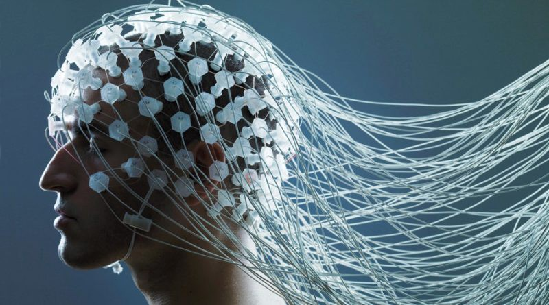
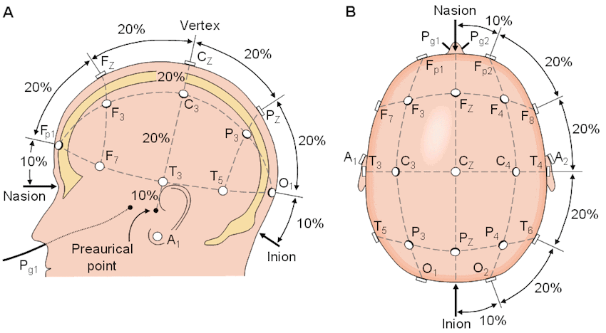
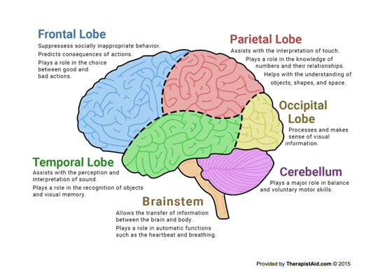

The field of brain-computer interfaces has come a long way since the first detection of alpha waves in 1924. Since then we have discovered many new ways of measuring brain activity. Scientists have viewed the brain in MRIs, fMRIs, and MEGs. However one of the most easily accessible ways of looking into our brains is electroencephalography (EEG).
Neuron Communication
We control our bodies by sending out electrical signals from our brains through our nerves. Our nerves constantly receive electrical signals and based on the strength of the input decide whether or not to pass on that signal. If it decides to, it causes an action potential. The neuron fires and passes on the signal.

The presynaptic neuron releases neurotransmitter into the synaptic cleft
Neurons communicate with each other through structures called synapses. Synapses are areas where neurons are close enough to pass chemical signals between one another. The area between the neurons is called the synaptic cleft. This area is extremely microscopic. To give you an idea, the cleft is less than 40 nanometers wide, while a human hair is about 80,000 nanometers.
Our Nerves Use Chemicals to Communicate
When neurons communicate, the neuron communicating the signal is called the presynaptic neuron and the neuron it is talking to is called the postsynaptic neuron. The presynaptic neuron contains chemicals called neurotransmitters in small sacs called vesicles. When the presynaptic neuron fires an action potential, the vesicles release their neurotransmitters into the synaptic cleft. The neurotransmitters then bind to receptors on the postsynaptic neuron. These chemicals either increase or decrease the change of the postsynaptic neuron firing an action potential. The neurotransmitters in the synaptic cleft then either diffuse, be recycled back into the presynaptic neuron through a process called reuptake, or broken down by enzymes and delivered back into the neuron to create more of the neurotransmitter.
EEGs measure electric fields around our brains
During interneuron communication, the neurons’ synaptic activity generates electric impulses called postsynaptic potential. A single neuron’s activity can’t be measured without direct contact with the neuron, but when groups of neurons fire together, their combined postsynaptic potential creates an electric field, strong enough to be detected from the scalp of our heads. This is what allows EEGs to detect brain activity in a non-evasive way.
Earthquakes in our heads
You can think of our brains as the Earth producing seismic activity that can be measured using seismographs. Similarly, instead of seismic activity, our brains produce electric activity that can be measured using electroencephalographs.
EEGs consist of electrodes that are placed on the scalps of our heads to measure changes in the electric field our brain produces in order to understand brain activity. The electrodes are often attached to caps to allow the same alignment of electrodes each time they are used. They look kind of like shower caps with a bunch of wires coming out of them. The electric activity is measured in volts and is then digitized and sent to an amplifier.

EEG vs Other Methods
One of the main advantages of EEGs is the fact that they provide excellent temporal resolution. In simple terms, this means that EEGs can get readings at a very fast rate to provide real-time data unlike other methods such as MRIs that take longer between each reading.
· · ·
The only downside of EEGs is that because they measure the electric fields, they can’t narrow down exactly where the signals come from. Due to this, they have poor spatial resolution. They can only detect when groups of neurons fire together, meaning that its harder to make accurate predictions with the information. However, using more electrodes can help increase spatial resolution. You can use anywhere from 5 to 500 electrodes. Unfortunately, the more electrodes you use, the more expensive the setup is and the longer it takes to get set up for readings.
The 10–20 Electrode System
The 10–20 system was created to cover all cortex regions of the brain. It’s an internationally recognized system that is used all over the world. The placement of electrodes in the system is based on three points on the head:
- 1. Nasion: The point between the forehead and the nose, between the eyes
- 2. Inion: The lowest point of the skull on the back of the head. If you feel the back of your head, it’ll be the bump
- 3. Pre-auricular Points: There are two of these points. They are located near your sideburns right next to ear canal
The 10–20 system is named as such because the electrodes are placed at 10%, 20%, 20%, 20%, 20%, then 10% of the measurements between the 3 landmarks mentioned before. The diagram below will give you a better idea.

The 10-20 electrode placement system
The Letter and Number of each Electrode Gives Key Information
The number that each electrode label has tells you which side of the brain its located on. If the number is odd, it’s on the left side of the brain, if the number is even, it’s on the right.

The letters of the labels explain which brain section the electrode in on:
Fp - Frontal-Polar
Responsible for strategic processes and recalling memory.
F - Frontal Lobe
Is used for some motor function, forming memories and personalities, along with speech and language production.
T - Temporal Lobe
Makes sense of auditory senses, helping us understand speech.
C - Central
This isn’t actually a section of the brain, but is used as reference to name those particular positions of electrodes.
P - Parietal Lobe
Processes sensory information regarding taste, temperature, and touch.
O - Occipital Lobe
Is used to process visual information from the eyes.
A - Auricular
This is just simply the earlobe.
Classifying Different EEG Frequencies
You can look at the data you get from EEGs and separate them into different wave types based on their frequency. These waves help give insight into the brain’s processes.
Theta (4–7 Hz) — Is associated high-level brain processing. These waves are more prominent when you’re doing difficult tasks
Alpha (7–12 Hz) — These waves are associated with calmness and a state of relaxation. They are also correlated with attention.
Beta (12–30 Hz) — Beta waves are linked with planning and thinking about movement.
Gamma (>30 Hz, typically 40 Hz) — Associated with rapid eye movement, and attentive focusing.
· · ·
EEGs are a portable, fast, and relatively affordable way to measure brainwaves. They are already being used around the world to solve problems. EEGs have allowed disabled people to control wheelchairs and move cursors on a screen. They’ve also provides insights in the media industry by measuring people’s emotional response to various ads and videos. EEGs are even being used in gaming to control in game objects! We have just scratched the surface of their use, and I can’t wait to see how they disrupt the world of technology in the future.